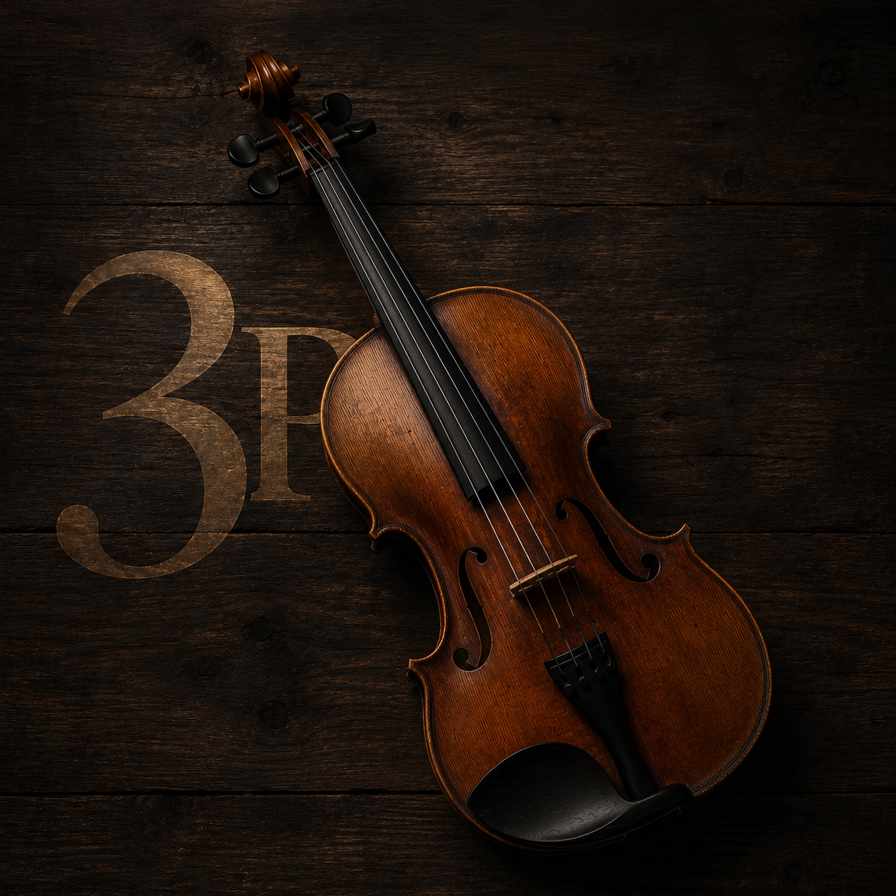

Os 3 Pilares do Violista CCB corrige os fundamentos que ninguém ensinou — aplicado diretamente nos hinos que você já toca.
Quero melhorar meu som agoraA posição que compromete sua afinação, sua velocidade e seu conforto ao mesmo tempo — sem você perceber.
O ponto de partida de todo som bonito na viola. Pequenos ajustes aqui mudam completamente a qualidade do que você produz.
Não só afinar o instrumento. Desenvolver o ouvido para tocar afinado dentro da orquestra, nos hinos do Hinário 5.
Meu nome é Thiago Brito. Comecei no violino em 2011, migrei para a viola em 2016 — e passei anos tocando sem base técnica real, juntando um quebra-cabeça de informações espalhadas. Só quando fui atrás do que faltava é que meu som mudou de verdade. Criei esse treinamento para que você não precise levar anos para chegar onde eu cheguei.
Acesso imediato ao método completo.

pagamento único
Garantia incondicional de 7 dias.